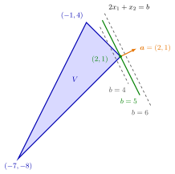

Supporting Hyperplane¶
Definition¶
Let and , let be the hyperplane they determine, and let be nonempty. is a supporting hyperplane of if
(a) for all (or for all ), and
(b) there is an with .
A supporting hyperplane of that contains a given point is called a supporting hyperplane of through ; this is the setting of the normal cone and of supporting hyperplanes from gradients.
Interpretation¶
A supporting hyperplane lies against a set from outside: the whole set is on one side, and the hyperplane touches the set, or at least its closure. It cannot be pushed any further towards the set without cutting into it.

The figure shows Example 2 below, with . The maximum of on is , attained only at the corner , so the green line is a supporting hyperplane. The dashed line fails condition (a): it cuts off the corner , where . The dashed line satisfies (a) but fails (b), because no point of reaches it. Sliding the line in the direction until it last touches is the graphical method described below.
Condition (a) puts in one closed halfspace bounded by ; condition (b) says is as close as possible. Together, in the form with , they give , since a point of on is a limit of points of . The converse needs care: the supremum must be reached in , which can fail for an unbounded set (Example 4 below). For a closed set, supports from above exactly when is the maximum of over ; without closedness the maximum may be missing (Example 3 below).
This is the graphical method of OR Modelling: slide the objective line in the improving direction until it last touches the feasible region; that last line supports the region, and is the optimal value. A supporting hyperplane is also a separating hyperplane of and the touching point.
Every boundary point of a closed convex set has a supporting hyperplane through it, but it need not be unique: at a corner there are many (Example 1 below). For a nonconvex set a boundary point can have none, such as the inner corner of the L-shaped set . Also, may contain all of : a segment on the -axis is supported by in the sense of the definition above.
Key Results¶
- If is a supporting hyperplane with on , then (by condition (b) and continuity of ).
- For a closed set : is a supporting hyperplane of with on if and only if attains a global maximum on and .
- For a closed convex set and there is a supporting hyperplane of through ; for a convex set that is not closed this still holds, see Separation of a Point and a Closed Convex Set.
- For nonempty closed convex and with nearest point , the hyperplane through with normal supports at (see Nearest Point of a Closed Convex Set).
- For a polyhedral set and , the supporting hyperplanes through with below are exactly with a nonnegative combination of the binding at , that is, with (see Normal Cone of a Polyhedral Set).
Examples¶
1. Several supporting hyperplanes at a corner. Let and . The line supports and contains the whole edge from to ; so does with the other edge. The line also supports : for , , with equality only if and , so it meets only at .
2. Supporting hyperplanes as maximum levels. Let , the closed triangle with corners , , . For : on , with equality only where and , that is at . So the maximum is and is a supporting hyperplane touching only at . The line satisfies (a) but not (b), and fails (a) because gives . For the maximum is attained on the whole edge from to .
3. Closedness matters for the maximum characterization. Let , the open unit disc, and . Then on , and has , so is a supporting hyperplane by the definition. But has no maximum on : its supremum is not attained.
4. A finite supremum is not enough. Let , a closed convex set, and . Then on and , but no point of has , so is not a supporting hyperplane, although lies on one side of it and comes arbitrarily close. At the boundary point , however, supports : on .
Prerequisites¶
- Hyperplane
- Halfspace
- Separating Hyperplane
- Adherent Point and Closure of a Set
- Global Maximum and Minimum on
Related Concepts¶
- Separation of a Point and a Closed Convex Set
- Nearest Point of a Closed Convex Set
- Normal Cone
- Normal Cone of a Polyhedral Set
- Supporting Hyperplanes from Gradients
- Extreme Points on a Supporting Hyperplane
- Set of Minimizers of a Quasi-Convex Function
Sources¶
- Math VI: Convexity and Optimization · Week 2
- H. E. Nusse and M. Dienstknecht, Math VI: Convexity and Optimization, lecture notes 2026–2027, Section 2.2
Aliases: supporting line, supporting plane, support hyperplane Keywords: \boldsymbol{a}^{\top}\boldsymbol{x}\leq b\ \forall\boldsymbol{x}\in V, \exists\boldsymbol{x}\in\operatorname{Cl}(V)\colon\boldsymbol{a}^{\top}\boldsymbol{x}=b, \max{\boldsymbol{a}^{\top}\boldsymbol{x}\colon\boldsymbol{x}\in V}=b, hyperplane touching a set, supporting hyperplane through a boundary point Symbols: element of, partial, real numbers, square root, subset
Last updated: 5 November 2026 12:47
Supporting HyperplaneConvex Hull of Extreme PointsExtreme Points on a Supporting HyperplaneNormal ConeSet of Minimizers of a Quasi-Convex FunctionSupporting Hyperplanes from GradientsHyperplaneHalfspaceSeparating HyperplaneAdherent Point and Closure of a SetGlobal Maximum and Minimum on \(\mathbb{R}^n\)Separation of a Point and a Closed Convex SetNearest Point of a Closed Convex SetNormal Cone of a Polyhedral Set